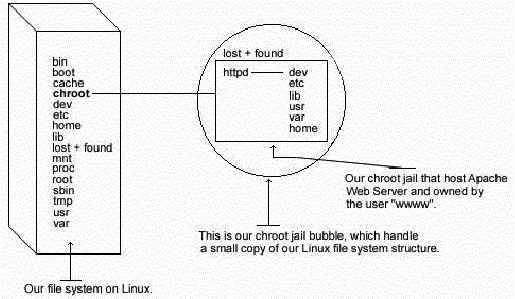

L
i n u x P a r
k
при
поддержке ВебКлуба |
Глава 19 Серверное программное обеспечение (Веб сервис) (Часть
3)В этой главе
Linux MM –
библиотека совместно используемой памяти
Веб-сервер
Apache
Конфигурации
PHP4 – язык
скриптов со стороны сервера
Perl
библиотека – CGI.pm
Организация
защиты Apache
Запуск Apache
с использованием chroot.
Оптимизация
Apache
|
 |
Эта часть фокусируется на предотвращении использования Apache
как точку взлома системы. Apache по умолчанию запускается как не root
пользователь, ограничивая тем самым любые разрушения, действиями, котрые может
выполнить обычный пользователь с локальным shell. Конечно, в большинстве случаев
такой защиты достаточно, но можно сделать еще один дополнительный шаг – запуск
Apache в chroot окружении.
Основная выгода от использования chroot - это ограничение части
файловой системы, которую демон может видеть как корневой каталог.
Дополнительно, так как эта часть файловой системы нужна только для поддержки
Apache, то количество программ доступное на ней чрезвычайно ограничено. Наиболее
важно то, что здесь не нужно иметь setuid-root программ, которые можно
использовать для получения root доступа и взлома chroot ограничений.

Chrooting apache – это не простая задача. Перед ее решением мы
рассмотрим некоторые “за” и “против”, чтобы вы решили нужно ли вам это.
За:
- Если apache будет взломан, то атакующий не получит доступ к элементам
файловой системы.
- Плохо написанные CGI скрипты, которые могут позволить кому-нибудь получить
доступ к вашему серверу не будут работать.
Против:
- Существуют дополнительные библиотеки, которые вы должны иметь в chroot
окружении, чтобы Apache работал корректно.
- Если вы используете любые Perl/CGI возможности в Apache, вам нужно
будетскопировать необходимые двоичные файлы, Perl библиотеки и файлы в
предназначенное место chroot пространства. Тоже самое относится и к SSL, PHP,
LDAP, PostgresSQL и другим программам третьих лиц.
chroot конфигурация приведенная ниже полагает, что вы
компилировали ваш сервер Apache со внешней программой mod_ssl. Различия в том,
что вы компилировали с вашим веб сервером Apache постоянно находится в
библиотеках и двоичных файлах, которые вы должны копировать в chroot
каталог.
Помните, что если вы компилировали Apache с поддержкой
mod_perl, вы должны скопировать все связанные двоичные файлы и Perl библиотеки в
chroot каталог. Perl находится в “/usr/lib/perl5” и в случае использования
возможностей Perl, копируйте каталог Perl в “/chroot/httpd/usr/lib/perl5/”. Не
забудьте перед копированием создать каталог “/chroot/httpd/usr/lib/perl5” в
вашей chroot структуре.
Ниже приводятся все необходимые шаги для запуска веб сервера
Apache в chroot окружении:
Шаг 1
Мы должны определить разделяемые библиотеки от которых зависит
httpd. Их надо будет позже скопировать в chroot каталог.
Для поиска
разделяемых библиотек от которых зависит httpd выполните следующую
команду:
[root@deep /]# ldd
/usr/sbin/httpd
libpam.so.0 => /lib/libpam.so.0 (0x40016000)
libm.so.6
=> /lib/libm.so.6 (0x4001f000)
libdl.so.2 => /lib/libdl.so.2
(0x4003b000)
libcrypt.so.1 => /lib/libcrypt.so.1
(0x4003e000)
libnsl.so.1 => /lib/libnsl.so.1
(0x4006b000)
libresolv.so.2 => /lib/libresolv.so.2
(0x40081000)
libdb.so.3 => /lib/libdb.so.3 (0x40090000)
libc.so.6 =>
/lib/libc.so.6 (0x400cb000)
/lib/ld-linux.so.2 => /lib/ld-linux.so.2
(0x40000000)
Сделайте заметки об этих файлах; они потребуются нам
позже.
Шаг 2
Создайте новый UID и GID, если этой же не сделано, необходимые
для запуска Apache httpd. Это важно, потому что запуск из под root ликвидирует
преимущества chroot окружения, а использование UID, которые уже существуют на
системе (например, nobody) может дать доступ сервису к другим ресурсам.
Представьте себе, что веб сервер запущен из под пользователя nobody, или любого
другого используемого UID/GID и был взломан. Взломщик получит доступ из chroot к
любым другим процессам запущенным как. Здесь приведены типичные UID и GID.
Проверьте файлы “/etc/passwd” и “/etc/group” файлы на наличие свободных UID/GID.
В нашей конфигурации мы используем значение “80” и UID/GID “www”.
[root@deep /]# useradd -c “Apache Server” -u 80 -s
/bin/false -r -d /home/httpd www 2>/dev/null || :
Вышеприведенная команда создаст группу “www” с числовым GID
равном 80, и пользователя “www” с числовым номером UID равном 80.
Шаг
3
Установим chroot окружение. Первое, мы должны создать chroot
структуру для Apache. Мы используем “/chroot/httpd” как chroot каталог для
Apache. “/chroot/httpd” – это только каталог на отдельном разделе, где мы решили
разместить apache для большей безопасности.
[root@deep /]# /etc/rc.d/init.d/httpd stop (только если Apache
уже инсталлирован и запущен на вашей системе).
Shutting down http: [ OK ]
[root@deep /]# mkdir /chroot/httpd
Далее мы создаем остальные каталоги:
[root@deep /]# mkdir /chroot/httpd/dev
[root@deep /]# mkdir
/chroot/httpd/lib
[root@deep /]# mkdir /chroot/httpd/etc
[root@deep /]#
mkdir -p /chroot/httpd/usr/sbin
[root@deep /]# mkdir -p
/chroot/httpd/var/run
[root@deep /]# mkdir -p
/chroot/httpd/var/log/httpd
[root@deep /]# chmod 750
/chroot/httpd/var/log/httpd/
[root@deep /]# mkdir -p
/chroot/httpd/home/httpd
Копируйте основной конфигурационный каталог, конфигурационные
файлы, каталог cgi-bin, root каталог и программу httpd в chroot
окружение:
[root@deep /]# cp -r /etc/httpd
/chroot/httpd/etc/
[root@deep /]# cp -r /home/httpd/cgi-bin
/chroot/httpd/home/httpd/
[root@deep /]# cp -r /home/httpd/your-DocumentRoot
/chroot/httpd/home/httpd/
[root@deep /]# mknod /chroot/httpd/dev/null c 1
3
[root@deep /]# chmod 666 /chroot/httpd/dev/null
[root@deep /]# cp
/usr/sbin/httpd /chroot/httpd/usr/sbin/
Нам нужны каталоги “/chroot/httpd/etc”, “/chroot/httpd/dev”,
“/chroot/httpd/lib”, “/chroot/httpd/usr/sbin”, “/chroot/httpd/var/run”,
“/chroot/httpd/home/httpd” и “/chroot/httpd/var/log/httpd”, потому что “/”
считается от точки chroot.
Шаг 4
Если вы скомпилировали Apache с поддержкой SSL, вы должны
скопировать элементы каталога “/etc/ssl”, который содержит все приватные и
публичные ключи в chroot окружение.
[root@deep
/]# cp -r /etc/ssl /chroot/httpd/etc/ (требуется только если включена
поддержка mod_ssl).
[root@deep /]# chmod 600
/chroot/httpd/etc/ssl/certs/ca.crt (требуется только если включена
поддержка mod_ssl).
[root@deep /]# chmod 600
/chroot/httpd//etc/ssl/certs/server.crt (требуется только если включена
поддержка mod_ssl).
[root@deep /]# chmod 600
/chroot/httpd/etc/ssl/private/ca.key (требуется только если включена
поддержка mod_ssl).
[root@deep /]# chmod 600
/chroot/httpd/etc/ssl/private/server.key (требуется только если включена
поддержка mod_ssl).
Шаг 5
Так как мы компилировали apache с использованием разделяемых
библиотек, нам нужно инсталлировать их в структуру chroot каталога. Используйте
ldd /chroot/httpd/usr/sbin/httpd для поиска требуемых библиотек. Вывод этой
команды будет выглядеть примерно так:
libpam.so.0
=> /lib/libpam.so.0 (0x40016000)
libm.so.6 => /lib/libm.so.6
(0x4001f000)
libdl.so.2 => /lib/libdl.so.2 (0x4003b000)
libcrypt.so.1
=> /lib/libcrypt.so.1 (0x4003e000)
libnsl.so.1 => /lib/libnsl.so.1
(0x4006b000)
libresolv.so.2 => /lib/libresolv.so.2
(0x40081000)
libdb.so.3 => /lib/libdb.so.3 (0x40090000)
libc.so.6 =>
/lib/libc.so.6 (0x400cb000)
/lib/ld-linux.so.2 => /lib/ld-linux.so.2
(0x40000000)
Копируйте разделяемые библиотеки определенные выше:
[root@deep /]# cp /lib/libpam.so.0
/chroot/httpd/lib/
[root@deep /]# cp /lib/libm.so.6
/chroot/httpd/lib/
[root@deep /]# cp /lib/libdl.so.2
/chroot/httpd/lib/
[root@deep /]# cp /lib/libcrypt.so.1
/chroot/httpd/lib/
[root@deep /]# cp /lib/libnsl*
/chroot/httpd/lib/
[root@deep /]# cp /lib/libresolv*
/chroot/httpd/lib/
[root@deep /]# cp /lib/libdb.so.3
/chroot/httpd/lib/
[root@deep /]# cp /lib/libc.so.6
/chroot/httpd/lib/
[root@deep /]# cp /lib/ld-linux.so.2
/chroot/httpd/lib/
Вам также нужны следующие дополнительные библиотеки для
некоторых сетевых функций, подобных резолвингу:
[root@deep /]# cp /lib/libnss_compat* /chroot/httpd/lib/
[root@deep
/]# cp /lib/libnss_dns* /chroot/httpd/lib/
[root@deep /]# cp
/lib/libnss_files* /chroot/httpd/lib/
Шаг 6
Мы должны скопировать passwd и group файлы в
“/chroot/httpd/etc”. Концепция их использования такая же как и в ftpd. Затем, мы
удаляем все элементы из этих файлов, за исключением пользователя и группы под
которыми запускается apache.
[root@deep /]# cp
/etc/passwd /chroot/httpd/etc/
[root@deep /]# cp /etc/group
/chroot/httpd/etc/
Редактируйте файл passwd (vi /chroot/httpd/etc/passwd) и
удалите все элементы, кроме пользователя под которым мы запускаем apache (в
нашем случае это “www”):
www:x:80:80::/home/www:/bin/bash
Редактируйте файл group (vi /chroot/httpd/etc/group) и удалите
все элементы, кроме группы под которой запускается apache (в нашем случае это
“www”):
www:x:80:Шаг 7
Вам потребуются файлы “/etc/resolv.conf”, “/etc/nsswitch.conf”
и “/etc/hosts” в вашем chroot окружении.
[root@deep /]# cp /etc/resolv.conf /chroot/httpd/etc/
[root@deep /]#
cp /etc/hosts /chroot/httpd/etc/
[root@deep /]# cp /etc/nsswitch.conf
/chroot/httpd/etc/
Шаг 8
Сейчас на некоторые файлы в chroot окружении мы установим бит
“постоянства” для лучшей безопасности.
Установите бит “постоянства” на файл
“passwd”:
[root@deep /]# cd
/chroot/httpd/etc/
[root@deep /]# chattr +i passwd
Установите бит “постоянства” на файл “group”:
[root@deep /]# cd /chroot/httpd/etc/
[root@deep /]#
chattr +i group
Установите бит “постоянства” на файл “httpd.conf”:
[root@deep /]# cd
/chroot/httpd/etc/httpd/conf/
[root@deep /]# chattr +i httpd.conf
Установите бит “постоянства” на файл “resolv.conf”:
[root@deep /]# cd /chroot/httpd/etc/
[root@deep /]#
chattr +i resolv.conf
Установите бит “постоянства” на файл “hosts”:
[root@deep /]# cd /chroot/httpd/etc/
[root@deep /]#
chattr +i hosts
Установите бит “постоянства” на файл “nsswitch.conf”:
[root@deep /]# cd /chroot/httpd/etc/
[root@deep /]#
chattr +i nsswitch.confШаг 9
Копируйте файл “localtime” в chroot так, чтобы регистрационные
входы были правильно откорректированы для вашей локальной timezone:
[root@deep /]# cp /etc/localtime /chroot/httpd/etc/
Шаг 10
Удалите не нужные Apache файлы и каталоги:
[root@deep /]# rm -rf /var/log/httpd/
[root@deep /]# rm
-rf /etc/httpd/
[root@deep /]# rm -rf /home/httpd/
[root@deep /]# rm -f
/usr/sbin/httpd
Мы можем спокойно удалить все вышеназванные файлы и каталоги ,
так как они сейчас находятся в нашем chroot каталоге.
Шаг 11.
Сказать syslogd о новом chroot сервисе. Нормально, процессы
обращаются к syslogd через “/dev/log”. В chroot окружении это невозможно,
поэтому syslogd должен слушать “/chroot/httpd/dev/log”. Чтобы сделать это,
редактируйте скрипт запуска syslog для определения дополнительного места,
которое необходимо слушать.
Редактируйте скрипт syslog (vi /etc/rc.d/init.d/syslog) и
измените строку:
daemon syslogd -m
0
на:
daemon syslogd -m 0 -a
/chroot/httpd/dev/log
Шаг 12
По умолчанию скрипт httpd запускает демон “httpd” вне chroot
окружения. Мы должны изменить это, для этого редактируйте скрипт httpd (vi
/etc/rc.d/init.d/httpd) и измените следующие строки:
daemon httpd
на:
/usr/sbin/chroot /chroot/httpd/ /usr/sbin/httpd
-DSSL
rm -f
/var/run/httpd.pid
на:
rm -f
/chroot/httpd/var/run/httpd.pid
Шаг 13
В заключении, вы должны проверить новую chroot конфигурацию
вашего веб сервера Apache.
Первое, перезагрузите демон syslogd:
[root@deep /]# /etc/rc.d/init.d/syslog restart
Shutting down kernel logger: [ OK ]
Shutting down system logger: [ OK ]
Starting system logger: [ OK ]
Starting kernel logger: [ OK ]
Затем, запустите Apache в chroot окружении:
[root@deep /]# /etc/rc.d/init.d/httpd start
Starting httpd: [ OK ]
Если вы не получили каких-либо ошибок дайте команду:
[root@deep /]# ps ax | grep httpd
14373 ? S 0:00 httpd
-DSSL
14376 ? S 0:00 httpd -DSSL
14377 ? S 0:00 httpd -DSSL
14378 ? S
0:00 httpd -DSSL
14379 ? S 0:00 httpd -DSSL
14380 ? S 0:00 httpd
–DSSL
14381 ? S 0:00 httpd -DSSL
14382 ? S 0:00 httpd -DSSL
14383 ? S
0:00 httpd -DSSL
14384 ? S 0:00 httpd -DSSL
14385 ? S 0:00 httpd
-DSSL
14386 ? S 0:00 httpd -DSSL
14387 ? S 0:00 httpd -DSSL
14388 ? S
0:00 httpd -DSSL
14389 ? S 0:00 httpd -DSSL
14390 ? S 0:00 httpd
-DSSL
14391 ? S 0:00 httpd -DSSL
14397 ? S 0:00 httpd -DSSL
14476 ? S
0:00 httpd -DSSL
14477 ? S 0:00 httpd -DSSL
14478 ? S 0:00 httpd
-DSSL
Если это так, то проверьте действительно процесс сменил корень
(chroot):
[root@deep /]# ls -la
/proc/14373/root/
Вы должны
увидеть:
dev
etc
home
lib
usr
var
где 14373 PID одного из процессов httpd.
Поздравляем!
Так же как описано выше, если вы используете Perl, вам нужно
скопировать или создать жесткие ссылки любых системных библиотек, perl библиотек
“/usr/lib/perl5” и двоичных файлов в chroot структуре. Также надо действовать
для SSL, PHP, LDAP, PostgreSQL и других программ.
Конфигурация файла “/etc/logrotate.d/apache”
Сейчас, файлы регистраций Apache находятся в каталоге
“/chroot/var/log/httpd” вместо “/var/log/httpd”, и из-за этого нам надо
модифицировать файл “/etc/logrotate.d/httpd”. Также, мы скомпилировали Apache с
mod_ssl, поэтому должны добавить строки, разрешающие программе logrotate
ротировать файлы “ssl_request_log” и “ssl_engine_log”. Сконфигурируем файл
“/etc/logrotate.d/apache” на автоматическую ротацию файлов регистрации каждую
неделю.
Создайте файл apache (touch /etc/logrotate.d/apache) и добавьте
в него:
/chroot/httpd/var/log/httpd/access_log {
missingok
postrotate
/usr/bin/killall -HUP /chroot/httpd/usr/sbin/httpd
endscript
}
/chroot/httpd/var/log/httpd/error_log {
missingok
postrotate
/usr/bin/killall -HUP /chroot/httpd/usr/sbin/httpd
endscript
}
/chroot/httpd/var/log/httpd/ssl_request_log {
missingok
postrotate
/usr/bin/killall -HUP /chroot/httpd/usr/sbin/httpd
endscript
}
/chroot/httpd/var/log/httpd/ssl_engine_log {
missingok
postrotate
/usr/bin/killall -HUP /chroot/httpd/usr/sbin/httpd
endscript
}
Модуль
mod_mmap_static
Существует специальный модуль, поставляемый с дистрибутивом
Apache, называемый “mod_mmap_static”, который может быть использован для
улучшения производительности вашего веб сервера. Этот модуль работает, отображая
статически настроенный список часто запрашиваемых, но редко модифицируемых
файлов из RootDirectory. Так, если файл выводимый Apache часто не изменяется, вы
можете использовать этот модуль для отображения в памяти статического документа
и увеличения скорости работы вашего веб сервера Apache.
Важно заметить, что модуль mod_mmap_static должен быть включен
на этапе конфигурации и компиляции Apache. Если вы следовали за нашим описанием
процесса конфигурации и компиляции, то это уже сделано в Apache (--add-
module-../mod_mmap_static.c).
Шаг 1
Для отображения статических документов в памяти используйте
следующую команду:
[root@deep /]# find
/home/httpd/ona -type f -print | sed -e 's/.*/mmapfile &/' >
/etc/httpd/conf/mmap.conf
</home/httpd/ona> - это RootDirectory, или если быть
более точным каталог из которого вы будете предоставлять ваши документы, а
</etc/httpd/conf/mmap.conf> - это месторасположение файла “mmap.conf”,
который содержит статическое отображение в памяти всех документов из вашего
RootDirectory.
Шаг 2
После того, как файл “mmap.conf” был создан в месте, которое мы
отвели для хранения этого файла, мы должны включить его в файл “httpd.conf”,
чтобы использовать его возможности на сервере.
Редактируйте файл httpd.conf (vi /etc/httpd/conf/httpd.conf) и
добавьте в него строки:
<IfModule
mod_include.c>
Include conf/mmap.conf
</IfModule>
ЗАМЕЧАНИЕ. Смотрите документацию на Apache для большей
инофрмации об использовании mod_mmap_static. Помните, что эта возможность должна
использоваться, когда предоставляемые документы часто не изменяются.
Шаг
3
Перезагрузите веб сервер Apache, чтобы изменения вступили в
силу:
[root@deep /]# /etc/rc.d/init.d/httpd restart
Shutting down http: [ OK ]
Starting httpd: [ OK ]
Атрибуты atime
и noatime
Атрибуты atime и noatime могут быть использованы для небольшого
увеличения производительности Apache. Смотрите главу 4 в этой книге, “Общая
системная оптимизация ” для большей информации по этом вопросу.
Инсталлированные файлы для веб сервера Apache
> /etc/rc.d/init.d/httpd
> /etc/rc.d/rc0.d/K15httpd
> /etc/rc.d/rc1.d/K15httpd
> /etc/rc.d/rc2.d/K15httpd
> /etc/rc.d/rc3.d/S85httpd
> /etc/rc.d/rc4.d/S85httpd
> /etc/rc.d/rc5.d/S85httpd
> /etc/rc.d/rc6.d/K15httpd
> /etc/logrotate.d/apache
> /etc/httpd
> /etc/httpd/conf
> /etc/httpd/conf/httpd.conf.default
> /etc/httpd/conf/httpd.conf
> /etc/httpd/conf/mime.types.default
> /etc/httpd/conf/mime.types
> /etc/httpd/conf/magic.default
> /etc/httpd/conf/magic
> /etc/httpd/php.ini
> /home/httpd
> /home/httpd/cgi-bin
> /home/httpd/cgi-bin/printenv
> /home/httpd/cgi-bin/test-cgi
> /usr/bin/htpasswd
> /usr/bin/htdigest
> /usr/bin/dbmmanage
> /usr/include/apache
> /usr/include/apache/xml
> /usr/include/apache/xml/asciitab.h
> /usr/include/apache/xml/hashtable.h
> /usr/include/apache/xml/iasciitab.h
> /usr/include/apache/xml/latin1tab.h
> /usr/include/apache/xml/nametab.h
> /usr/include/apache/xml/utf8tab.h
> /usr/include/apache/xml/xmldef.h
> /usr/include/apache/xml/xmlparse.h
> /usr/include/apache/xml/xmlrole.h
> /usr/include/apache/xml/xmltok.h
> /usr/include/apache/xml/xmltok_impl.h
> /usr/include/apache/alloc.h
> /usr/include/apache/ap.h
> /usr/include/apache/ap_compat.h
> /usr/include/apache/ap_config.h
> /usr/include/apache/ap_config_auto.h
> /usr/include/apache/ap_ctx.h
> /usr/include/apache/ap_ctype.h
> /usr/include/apache/ap_hook.h
> /usr/include/apache/ap_md5.h
> /usr/include/apache/ap_mm.h
> /usr/include/apache/ap_mmn.h
> /usr/include/apache/ap_sha1.h
> /usr/include/apache/buff.h
> /usr/include/apache/compat.h
> /usr/include/apache/conf.h
> /usr/include/apache/explain.h
> /usr/include/apache/fnmatch.h
> /usr/include/apache/hsregex.h
> /usr/include/apache/http_conf_globals.h
> /usr/include/apache/http_config.h
> /usr/include/apache/http_core.h
> /usr/include/apache/http_log.h
> /usr/include/apache/http_main.h
> /usr/include/apache/http_protocol.h
> /usr/include/apache/http_request.h
> /usr/include/apache/http_vhost.h
> /usr/include/apache/httpd.h
> /usr/include/apache/multithread.h
> /usr/include/apache/rfc1413.h
> /usr/include/apache/scoreboard.h
> /usr/include/apache/util_date.h
> /usr/include/apache/util_md5.h
> /usr/include/apache/util_script.h
> /usr/include/apache/util_uri.h
> /usr/include/apache/os.h
> /usr/include/apache/os-inline.c
> /usr/lib/apache
> /usr/man/man1/htpasswd.1
> /usr/man/man1/htdigest.1
> /usr/man/man1/dbmmanage.1
> /usr/man/man8/ab.8
> /usr/man/man8/httpd.8
> /usr/man/man8/logresolve.8
> /usr/man/man8/rotatelogs.8
> /usr/man/man8/apxs.8
> /usr/sbin/httpd
> /usr/sbin/ab
> /usr/sbin/logresolve
> /usr/sbin/rotatelogs
> /usr/sbin/apxs
> /var/log/httpd
> /var/cache
> /var/cache/httpd
Инсталлированные файлы для
PHP4> /usr/bin/phpize
> /usr/bin/php-config
> /usr/include/php
> /usr/include/php/Zend
> /usr/include/php/Zend/FlexLexer.h
> /usr/include/php/Zend/acconfig.h
> /usr/include/php/Zend/modules.h
> /usr/include/php/Zend/zend-parser.h
> /usr/include/php/Zend/zend-scanner.h
> /usr/include/php/Zend/zend.h
> /usr/include/php/Zend/zend_API.h
> /usr/include/php/Zend/zend_alloc.h
> /usr/include/php/Zend/zend_builtin_functions.h
> /usr/include/php/Zend/zend_compile.h
> /usr/include/php/Zend/zend_config.h
> /usr/include/php/Zend/zend_config.w32.h
> /usr/include/php/Zend/zend_constants.h
> /usr/include/php/Zend/zend_dynamic_array.h
> /usr/include/php/Zend/zend_errors.h
> /usr/include/php/Zend/zend_execute.h
> /usr/include/php/Zend/zend_execute_locks.h
> /usr/include/php/Zend/zend_extensions.h
> /usr/include/php/Zend/zend_fast_cache.h
> /usr/include/php/Zend/zend_globals.h
> /usr/include/php/Zend/zend_globals_macros.h
> /usr/include/php/Zend/zend_hash.h
> /usr/include/php/Zend/zend_highlight.h
> /usr/include/php/Zend/zend_indent.h
> /usr/include/php/Zend/zend_list.h
> /usr/include/php/Zend/zend_llist.h
> /usr/include/php/Zend/zend_operators.h
> /usr/include/php/Zend/zend_ptr_stack.h
> /usr/include/php/Zend/zend_stack.h
> /usr/include/php/Zend/zend_variables.h
> /usr/include/php/TSRM
> /usr/include/php/TSRM/TSRM.h
> /usr/include/php/ext
> /usr/include/php/ext/standard
> /usr/include/php/ext/standard/base64.h
> /usr/include/php/ext/standard/basic_functions.h
> /usr/include/php/ext/standard/cyr_convert.h
> /usr/include/php/ext/standard/datetime.h
> /usr/include/php/ext/standard/dl.h
> /usr/include/php/ext/standard/dns.h
> /usr/include/php/ext/standard/exec.h
> /usr/include/php/ext/standard/file.h
> /usr/include/php/ext/standard/flock_compat.h
> /usr/include/php/ext/standard/fsock.h
> /usr/include/php/ext/standard/global.h
> /usr/include/php/ext/standard/head.h
> /usr/include/php/ext/standard/html.h
> /usr/include/php/ext/standard/info.h
> /usr/include/php/ext/standard/md5.h
> /usr/include/php/ext/standard/microtime.h
> /usr/include/php/ext/standard/pack.h
> /usr/include/php/ext/standard/pageinfo.h
> /usr/include/php/ext/standard/php_array.h
> /usr/include/php/ext/standard/php_assert.h
> /usr/include/php/ext/standard/php_browscap.h
> /usr/include/php/ext/standard/php_crypt.h
> /usr/include/php/ext/standard/php_dir.h
> /usr/include/php/ext/standard/php_filestat.h
> /usr/include/php/ext/standard/php_image.h
> /usr/include/php/ext/standard/php_iptc.h
> /usr/include/php/ext/standard/php_lcg.h
> /usr/include/php/ext/standard/php_link.h
> /usr/include/php/ext/standard/php_mail.h
> /usr/include/php/ext/standard/php_metaphone.h
> /usr/include/php/ext/standard/php_output.h
> /usr/include/php/ext/standard/php_rand.h
> /usr/include/php/ext/standard/php_standard.h
> /usr/include/php/ext/standard/php_string.h
> /usr/include/php/ext/standard/php_syslog.h
> /usr/include/php/ext/standard/php_var.h
> /usr/include/php/ext/standard/phpdir.h
> /usr/include/php/ext/standard/phpmath.h
> /usr/include/php/ext/standard/quot_print.h
> /usr/include/php/ext/standard/reg.h
> /usr/include/php/ext/standard/type.h
> /usr/include/php/ext/standard/uniqid.h
> /usr/include/php/ext/standard/url.h
> /usr/include/php/ext/standard/url_scanner.h
> /usr/include/php/regex
> /usr/include/php/regex/regex.h
> /usr/include/php/regex/regex_extra.h
> /usr/include/php/php.h
> /usr/include/php/php_regex.h
> /usr/include/php/php3_compat.h
> /usr/include/php/safe_mode.h
> /usr/include/php/fopen-wrappers.h
> /usr/include/php/php_version.h
> /usr/include/php/php_globals.h
> /usr/include/php/php_reentrancy.h
> /usr/include/php/php_ini.h
> /usr/include/php/SAPI.h
> /usr/include/php/php_config.h
> /usr/include/php/zend_config.h
> /usr/include/php/build-defs.h
> /usr/lib/php
> /usr/lib/php/DB
> /usr/lib/php/DB/common.php
> /usr/lib/php/DB/odbc.php
> /usr/lib/php/DB/mysql.php
> /usr/lib/php/DB/pgsql.php
> /usr/lib/php/DB/storage.php
> /usr/lib/php/build
> /usr/lib/php/build/pear.m4
> /usr/lib/php/build/fastgen.sh
> /usr/lib/php/build/library.mk
> /usr/lib/php/build/ltlib.mk
> /usr/lib/php/build/program.mk
> /usr/lib/php/build/rules.mk
> /usr/lib/php/build/rules_pear.mk
> /usr/lib/php/build/shtool
> /usr/lib/php/build/acinclude.m4
> /usr/lib/php/DB.php
Инсталлированные файлы для
mod_perl> /usr/lib/perl5/5.00503/i386-linux/perllocal.pod
> /usr/lib/perl5/man/man3/Apache.3
> /usr/lib/perl5/man/man3/Apache::Constants.3
> /usr/lib/perl5/man/man3/Apache::Leak.3
> /usr/lib/perl5/man/man3/Apache::Log.3
> /usr/lib/perl5/man/man3/Apache::PerlRunXS.3
> /usr/lib/perl5/man/man3/Apache::Symbol.3
> /usr/lib/perl5/man/man3/Apache::Table.3
> /usr/lib/perl5/man/man3/Apache::URI.3
> /usr/lib/perl5/man/man3/Apache::Util.3
> /usr/lib/perl5/man/man3/Apache::FakeRequest.3
> /usr/lib/perl5/man/man3/mod_perl.3
> /usr/lib/perl5/man/man3/Apache::ExtUtils.3
> /usr/lib/perl5/man/man3/Apache::SIG.3
> /usr/lib/perl5/man/man3/Apache::Status.3
> /usr/lib/perl5/man/man3/Apache::Include.3
> /usr/lib/perl5/man/man3/Apache::Debug.3
> /usr/lib/perl5/man/man3/Apache::Resource.3
> /usr/lib/perl5/man/man3/Apache::src.3
> /usr/lib/perl5/man/man3/Apache::PerlRun.3
> /usr/lib/perl5/man/man3/Apache::httpd_conf.3
> /usr/lib/perl5/man/man3/mod_perl_traps.3
> /usr/lib/perl5/man/man3/Apache::Options.3
> /usr/lib/perl5/man/man3/mod_perl_cvs.3
> /usr/lib/perl5/man/man3/Apache::Symdump.3
> /usr/lib/perl5/man/man3/Apache::RegistryLoader.3
> /usr/lib/perl5/man/man3/mod_perl_method_handlers.3
> /usr/lib/perl5/man/man3/mod_perl_tuning.3
> /usr/lib/perl5/man/man3/cgi_to_mod_perl.3
> /usr/lib/perl5/man/man3/Apache::StatINC.3
> /usr/lib/perl5/man/man3/Apache::Registry.3
> /usr/lib/perl5/man/man3/Bundle::Apache.3
> /usr/lib/perl5/man/man3/Apache::SizeLimit.3
> /usr/lib/perl5/man/man3/Apache::PerlSections.3
> /usr/lib/perl5/man/man3/Apache::RedirectLogFix.3
> /usr/lib/perl5/site_perl/5.005/i386-linux/auto
> /usr/lib/perl5/site_perl/5.005/i386-linux/auto/Apache
> /usr/lib/perl5/site_perl/5.005/i386-linux/auto/Apache/include
> /usr/lib/perl5/site_perl/5.005/i386-linux/auto/Apache/include/include
> /usr/lib/perl5/site_perl/5.005/i386-linux/auto/Apache/include/include/buff.h
> /usr/lib/perl5/site_perl/5.005/i386-linux/auto/Apache/include/include/multithread.h
> /usr/lib/perl5/site_perl/5.005/i386-linux/auto/Apache/include/include/httpd.h
> /usr/lib/perl5/site_perl/5.005/i386-linux/auto/Apache/include/include/ap_config.h
> /usr/lib/perl5/site_perl/5.005/i386-linux/auto/Apache/include/include/alloc.h
> /usr/lib/perl5/site_perl/5.005/i386-linux/auto/Apache/include/include/ap.h
> /usr/lib/perl5/site_perl/5.005/i386-linux/auto/Apache/include/include/ap_md5.h
> /usr/lib/perl5/site_perl/5.005/i386-linux/auto/Apache/include/include/ap_ctx.h
> /usr/lib/perl5/site_perl/5.005/i386-linux/auto/Apache/include/include/util_md5.h
> /usr/lib/perl5/site_perl/5.005/i386-linux/auto/Apache/include/include/rfc1413.h
> /usr/lib/perl5/site_perl/5.005/i386-linux/auto/Apache/include/include/conf.h
> /usr/lib/perl5/site_perl/5.005/i386-linux/auto/Apache/include/include/util_uri.h
> /usr/lib/perl5/site_perl/5.005/i386-linux/auto/Apache/include/include/explain.h
> /usr/lib/perl5/site_perl/5.005/i386-linux/auto/Apache/include/include/ap_compat.h
> /usr/lib/perl5/site_perl/5.005/i386-linux/auto/Apache/include/include/http_config.h
> /usr/lib/perl5/site_perl/5.005/i386-linux/auto/Apache/include/include/ap_sha1.h
> /usr/lib/perl5/site_perl/5.005/i386-linux/auto/Apache/include/include/scoreboard.h
> /usr/lib/perl5/site_perl/5.005/i386-linux/auto/Apache/include/include/compat.h
> /usr/lib/perl5/site_perl/5.005/i386-linux/auto/Apache/include/include/http_request.h
> /usr/lib/perl5/site_perl/5.005/i386-linux/auto/Apache/include/include/http_core.h
> /usr/lib/perl5/site_perl/5.005/i386-linux/auto/Apache/include/include/ap_mm.h
> /usr/lib/perl5/site_perl/5.005/i386-linux/auto/Apache/include/include/http_protocol.h
> /usr/lib/perl5/site_perl/5.005/i386-linux/auto/Apache/include/include/util_date.h
> /usr/lib/perl5/site_perl/5.005/i386-linux/auto/Apache/include/include/ap_hook.h
> /usr/lib/perl5/site_perl/5.005/i386-linux/auto/Apache/include/include/http_main.h
> /usr/lib/perl5/site_perl/5.005/i386-linux/auto/Apache/include/include/http_conf_globals.h
> /usr/lib/perl5/site_perl/5.005/i386-linux/auto/Apache/include/include/util_script.h
> /usr/lib/perl5/site_perl/5.005/i386-linux/auto/Apache/include/include/http_vhost.h
> /usr/lib/perl5/site_perl/5.005/i386-linux/auto/Apache/include/include/ap_ctype.h
> /usr/lib/perl5/site_perl/5.005/i386-linux/auto/Apache/include/include/hsregex.h
> /usr/lib/perl5/site_perl/5.005/i386-linux/auto/Apache/include/include/ap_mmn.h
> /usr/lib/perl5/site_perl/5.005/i386-linux/auto/Apache/include/include/ap_config_auto.h
> /usr/lib/perl5/site_perl/5.005/i386-linux/auto/Apache/include/include/http_log.h
> /usr/lib/perl5/site_perl/5.005/i386-linux/auto/Apache/include/include/fnmatch.h
> /usr/lib/perl5/site_perl/5.005/i386-linux/auto/Apache/include/os
> /usr/lib/perl5/site_perl/5.005/i386-linux/auto/Apache/include/os/netware
> /usr/lib/perl5/site_perl/5.005/i386-linux/auto/Apache/include/os/netware/os.h
> /usr/lib/perl5/site_perl/5.005/i386-linux/auto/Apache/include/os/netware/getopt.h
> /usr/lib/perl5/site_perl/5.005/i386-linux/auto/Apache/include/os/netware/test_char.h
> /usr/lib/perl5/site_perl/5.005/i386-linux/auto/Apache/include/os/netware/uri_delims.h
> /usr/lib/perl5/site_perl/5.005/i386-linux/auto/Apache/include/os/netware/precomp.h
> /usr/lib/perl5/site_perl/5.005/i386-linux/auto/Apache/include/os/bs2000
> /usr/lib/perl5/site_perl/5.005/i386-linux/auto/Apache/include/os/bs2000/os-inline.c
> /usr/lib/perl5/site_perl/5.005/i386-linux/auto/Apache/include/os/bs2000/ebcdic.h
> /usr/lib/perl5/site_perl/5.005/i386-linux/auto/Apache/include/os/bs2000/os.h
> /usr/lib/perl5/site_perl/5.005/i386-linux/auto/Apache/include/os/tpf
> /usr/lib/perl5/site_perl/5.005/i386-linux/auto/Apache/include/os/tpf/ebcdic.h
> /usr/lib/perl5/site_perl/5.005/i386-linux/auto/Apache/include/os/tpf/os.h
> /usr/lib/perl5/site_perl/5.005/i386-linux/auto/Apache/include/os/tpf/os-inline.c
> /usr/lib/perl5/site_perl/5.005/i386-linux/auto/Apache/include/os/win32
> /usr/lib/perl5/site_perl/5.005/i386-linux/auto/Apache/include/os/win32/service.h
> /usr/lib/perl5/site_perl/5.005/i386-linux/auto/Apache/include/os/win32/getopt.h
> /usr/lib/perl5/site_perl/5.005/i386-linux/auto/Apache/include/os/win32/registry.h
> /usr/lib/perl5/site_perl/5.005/i386-linux/auto/Apache/include/os/win32/resource.h
> /usr/lib/perl5/site_perl/5.005/i386-linux/auto/Apache/include/os/win32/installer
> /usr/lib/perl5/site_perl/5.005/i386-linux/auto/Apache/include/os/win32/installer/installdll
> /usr/lib/perl5/site_perl/5.005/i386-linux/auto/Apache/include/os/win32/installer/installdll/test
> /usr/lib/perl5/site_perl/5.005/i386-linux/auto/Apache/include/os/win32/installer/installdll/test/test.h
> /usr/lib/perl5/site_perl/5.005/i386-linux/auto/Apache/include/os/win32/installer/installdll/test/resource.h
> /usr/lib/perl5/site_perl/5.005/i386-linux/auto/Apache/include/os/win32/os.h
> /usr/lib/perl5/site_perl/5.005/i386-linux/auto/Apache/include/os/win32/passwd.h
> /usr/lib/perl5/site_perl/5.005/i386-linux/auto/Apache/include/os/win32/readdir.h
> /usr/lib/perl5/site_perl/5.005/i386-linux/auto/Apache/include/os/unix
> /usr/lib/perl5/site_perl/5.005/i386-linux/auto/Apache/include/os/unix/os.h
> /usr/lib/perl5/site_perl/5.005/i386-linux/auto/Apache/include/os/unix/os-inline.c
> /usr/lib/perl5/site_perl/5.005/i386-linux/auto/Apache/include/os/os390
> /usr/lib/perl5/site_perl/5.005/i386-linux/auto/Apache/include/os/os390/os-inline.c
> /usr/lib/perl5/site_perl/5.005/i386-linux/auto/Apache/include/os/os390/ebcdic.h
> /usr/lib/perl5/site_perl/5.005/i386-linux/auto/Apache/include/os/os390/os.h
> /usr/lib/perl5/site_perl/5.005/i386-linux/auto/Apache/include/os/mpeix
> /usr/lib/perl5/site_perl/5.005/i386-linux/auto/Apache/include/os/mpeix/os-inline.c
> /usr/lib/perl5/site_perl/5.005/i386-linux/auto/Apache/include/os/mpeix/os.h
> /usr/lib/perl5/site_perl/5.005/i386-linux/auto/Apache/include/os/os2
> /usr/lib/perl5/site_perl/5.005/i386-linux/auto/Apache/include/os/os2/os.h
> /usr/lib/perl5/site_perl/5.005/i386-linux/auto/Apache/include/os/os2/os-inline.c
> /usr/lib/perl5/site_perl/5.005/i386-linux/auto/Apache/include/modules
> /usr/lib/perl5/site_perl/5.005/i386-linux/auto/Apache/include/modules/ssl
> /usr/lib/perl5/site_perl/5.005/i386-linux/auto/Apache/include/modules/ssl/ssl_expr.h
> /usr/lib/perl5/site_perl/5.005/i386-linux/auto/Apache/include/modules/ssl/ssl_util_table.h
> /usr/lib/perl5/site_perl/5.005/i386-linux/auto/Apache/include/modules/ssl/ssl_util_ssl.h
> /usr/lib/perl5/site_perl/5.005/i386-linux/auto/Apache/include/modules/ssl/ssl_expr_parse.h
> /usr/lib/perl5/site_perl/5.005/i386-linux/auto/Apache/include/modules/ssl/mod_ssl.h
> /usr/lib/perl5/site_perl/5.005/i386-linux/auto/Apache/include/modules/ssl/ssl_util_sdbm.h
> /usr/lib/perl5/site_perl/5.005/i386-linux/auto/Apache/include/modules/perl
> /usr/lib/perl5/site_perl/5.005/i386-linux/auto/Apache/include/modules/perl/mod_perl.h
> /usr/lib/perl5/site_perl/5.005/i386-linux/auto/Apache/include/modules/perl/mod_perl_version.h
> /usr/lib/perl5/site_perl/5.005/i386-linux/auto/Apache/include/modules/perl/perl_PL.h
> /usr/lib/perl5/site_perl/5.005/i386-linux/auto/Apache/include/modules/perl/mod_perl_xs.h
> /usr/lib/perl5/site_perl/5.005/i386-linux/auto/Apache/include/modules/php4
> /usr/lib/perl5/site_perl/5.005/i386-linux/auto/Apache/include/modules/php4/mod_php4.h
> /usr/lib/perl5/site_perl/5.005/i386-linux/auto/Apache/include/modules/proxy
> /usr/lib/perl5/site_perl/5.005/i386-linux/auto/Apache/include/modules/proxy/mod_proxy.h
> /usr/lib/perl5/site_perl/5.005/i386-linux/auto/Apache/include/modules/standard
> /usr/lib/perl5/site_perl/5.005/i386-linux/auto/Apache/include/modules/standard/mod_rewrite.h
> /usr/lib/perl5/site_perl/5.005/i386-linux/auto/Apache/include/support
> /usr/lib/perl5/site_perl/5.005/i386-linux/auto/Apache/include/support/suexec.h
> /usr/lib/perl5/site_perl/5.005/i386-linux/auto/Apache/include/lib
> /usr/lib/perl5/site_perl/5.005/i386-linux/auto/Apache/include/lib/expat-lite
> /usr/lib/perl5/site_perl/5.005/i386-linux/auto/Apache/include/lib/expat-lite/iasciitab.h
> /usr/lib/perl5/site_perl/5.005/i386-linux/auto/Apache/include/lib/expat-lite/latin1tab.h
> /usr/lib/perl5/site_perl/5.005/i386-linux/auto/Apache/include/lib/expat-lite/xmldef.h
> /usr/lib/perl5/site_perl/5.005/i386-linux/auto/Apache/include/lib/expat-lite/xmlparse.h
> /usr/lib/perl5/site_perl/5.005/i386-linux/auto/Apache/include/lib/expat-lite/xmltok.h
> /usr/lib/perl5/site_perl/5.005/i386-linux/auto/Apache/include/lib/expat-lite/xmlrole.h
> /usr/lib/perl5/site_perl/5.005/i386-linux/auto/Apache/include/lib/expat-lite/hashtable.h
> /usr/lib/perl5/site_perl/5.005/i386-linux/auto/Apache/include/lib/expat-lite/nametab.h
> /usr/lib/perl5/site_perl/5.005/i386-linux/auto/Apache/include/lib/expat-lite/xmltok_impl.h
> /usr/lib/perl5/site_perl/5.005/i386-linux/auto/Apache/include/lib/expat-lite/utf8tab.h
> /usr/lib/perl5/site_perl/5.005/i386-linux/auto/Apache/include/lib/expat-lite/asciitab.h
> /usr/lib/perl5/site_perl/5.005/i386-linux/auto/Apache/include/regex
> /usr/lib/perl5/site_perl/5.005/i386-linux/auto/Apache/include/regex/utils.h
> /usr/lib/perl5/site_perl/5.005/i386-linux/auto/Apache/include/regex/regex2.h
> /usr/lib/perl5/site_perl/5.005/i386-linux/auto/Apache/include/regex/cclass.h
> /usr/lib/perl5/site_perl/5.005/i386-linux/auto/Apache/include/regex/cname.h
> /usr/lib/perl5/site_perl/5.005/i386-linux/auto/Apache/typemap
> /usr/lib/perl5/site_perl/5.005/i386-linux/auto/Apache/Leak
> /usr/lib/perl5/site_perl/5.005/i386-linux/auto/Apache/Leak/Leak.so
> /usr/lib/perl5/site_perl/5.005/i386-linux/auto/Apache/Leak/Leak.bs
> /usr/lib/perl5/site_perl/5.005/i386-linux/auto/Apache/Symbol
> /usr/lib/perl5/site_perl/5.005/i386-linux/auto/Apache/Symbol/Symbol.so
> /usr/lib/perl5/site_perl/5.005/i386-linux/auto/Apache/Symbol/Symbol.bs
> /usr/lib/perl5/site_perl/5.005/i386-linux/auto/mod_perl
> /usr/lib/perl5/site_perl/5.005/i386-linux/auto/mod_perl/.packlist
> /usr/lib/perl5/site_perl/5.005/i386-linux/mod_perl.pod
> /usr/lib/perl5/site_perl/5.005/i386-linux/Bundle
> /usr/lib/perl5/site_perl/5.005/i386-linux/Bundle/Apache.pm
> /usr/lib/perl5/site_perl/5.005/i386-linux/Apache
> /usr/lib/perl5/site_perl/5.005/i386-linux/Apache/test.pm
> /usr/lib/perl5/site_perl/5.005/i386-linux/Apache/Debug.pm
> /usr/lib/perl5/site_perl/5.005/i386-linux/Apache/Resource.pm
> /usr/lib/perl5/site_perl/5.005/i386-linux/Apache/src.pm
> /usr/lib/perl5/site_perl/5.005/i386-linux/Apache/httpd_conf.pm
> /usr/lib/perl5/site_perl/5.005/i386-linux/Apache/Symdump.pm
> /usr/lib/perl5/site_perl/5.005/i386-linux/Apache/RegistryLoader.pm
> /usr/lib/perl5/site_perl/5.005/i386-linux/Apache/Registry.pm
> /usr/lib/perl5/site_perl/5.005/i386-linux/Apache/SizeLimit.pm
> /usr/lib/perl5/site_perl/5.005/i386-linux/Apache/RedirectLogFix.pm
> /usr/lib/perl5/site_perl/5.005/i386-linux/Apache/MyConfig.pm
> /usr/lib/perl5/site_perl/5.005/i386-linux/Apache/Constants
> /usr/lib/perl5/site_perl/5.005/i386-linux/Apache/Constants/Exports.pm
> /usr/lib/perl5/site_perl/5.005/i386-linux/Apache/SIG.pm
> /usr/lib/perl5/site_perl/5.005/i386-linux/Apache/StatINC.pm
> /usr/lib/perl5/site_perl/5.005/i386-linux/Apache/Opcode.pm
> /usr/lib/perl5/site_perl/5.005/i386-linux/Apache/PerlSections.pm
> /usr/lib/perl5/site_perl/5.005/i386-linux/Apache/FakeRequest.pm
> /usr/lib/perl5/site_perl/5.005/i386-linux/Apache/ExtUtils.pm
> /usr/lib/perl5/site_perl/5.005/i386-linux/Apache/Include.pm
> /usr/lib/perl5/site_perl/5.005/i386-linux/Apache/Status.pm
> /usr/lib/perl5/site_perl/5.005/i386-linux/Apache/PerlRun.pm
> /usr/lib/perl5/site_perl/5.005/i386-linux/Apache/Options.pm
> /usr/lib/perl5/site_perl/5.005/i386-linux/Apache/RegistryNG.pm
> /usr/lib/perl5/site_perl/5.005/i386-linux/Apache/RegistryBB.pm
> /usr/lib/perl5/site_perl/5.005/i386-linux/Apache/Connection.pm
> /usr/lib/perl5/site_perl/5.005/i386-linux/Apache/Constants.pm
> /usr/lib/perl5/site_perl/5.005/i386-linux/Apache/File.pm
> /usr/lib/perl5/site_perl/5.005/i386-linux/Apache/Leak.pm
> /usr/lib/perl5/site_perl/5.005/i386-linux/Apache/Log.pm
> /usr/lib/perl5/site_perl/5.005/i386-linux/Apache/ModuleConfig.pm
> /usr/lib/perl5/site_perl/5.005/i386-linux/Apache/PerlRunXS.pm
> /usr/lib/perl5/site_perl/5.005/i386-linux/Apache/Server.pm
> /usr/lib/perl5/site_perl/5.005/i386-linux/Apache/Symbol.pm
> /usr/lib/perl5/site_perl/5.005/i386-linux/Apache/Table.pm
> /usr/lib/perl5/site_perl/5.005/i386-linux/Apache/URI.pm
> /usr/lib/perl5/site_perl/5.005/i386-linux/Apache/Util.pm
> /usr/lib/perl5/site_perl/5.005/i386-linux/mod_perl_hooks.pm
> /usr/lib/perl5/site_perl/5.005/i386-linux/mod_perl_hooks.pm.PL
> /usr/lib/perl5/site_perl/5.005/i386-linux/mod_perl_tuning.pod
> /usr/lib/perl5/site_perl/5.005/i386-linux/mod_perl_cvs.pod
> /usr/lib/perl5/site_perl/5.005/i386-linux/mod_perl_method_handlers.pod
> /usr/lib/perl5/site_perl/5.005/i386-linux/mod_perl.pm
> /usr/lib/perl5/site_perl/5.005/i386-linux/mod_perl_traps.pod
> /usr/lib/perl5/site_perl/5.005/i386-linux/cgi_to_mod_perl.pod
> /usr/lib/perl5/site_perl/5.005/i386-linux/Apache.pm